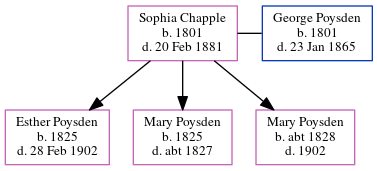

Sophia Poysden (née Chapple) 1801 - 1881
[ Home ] | [ Calendar ] | [ Surnames Index ] | [ Errors ] | [ Family History ]Sophia Chapple, the 3 times great-grandmother of Nigel Horne, was born in Blean, Kent, England in 18011,2,3,4,5,6,7 and married George Poysden (an agricultural labourer with whom she had 3 children: Esther, Mary and Mary) at Ss Cosmus & Damian in Blean on 27 Dec 18248.
During her life, she was living in Harbledown, Kent, England in 18411; in Chartham Hatch, Kent, England on 30 Mar 185111; in Chartham, Kent, England in 18613; and in Chartham Hatch on 2 Apr 187110 following the death of her husband on 23 Jan 1865.
She died on 20 Feb 1881 in Chartham6 (old age. www.freebmd.org.uk) and was buried there at St Mary's Church on 26 Feb 18819.
Children
- Esther was born in 1825
- Mary was born in 1825
- Mary was born c. 1828
Citations
- 1841 England Census Online publication - Provo, UT, USA: The Generations Network, Inc., 2006.Original data - Census Returns of England and Wales, 1841. Kew, Surrey, England: The National Archives of the UK (TNA): Public Record Office (PRO), 1841. Data imaged from the National
- 1851 England Census Online publication - Provo, UT, USA: The Generations Network, Inc., 2005.Original data - Census Returns of England and Wales, 1851. Kew, Surrey, England: The National Archives of the UK (TNA): Public Record Office (PRO), 1851. Data imaged from the National
- 1861 England Census Online publication - Provo, UT, USA: The Generations Network, Inc., 2005.Original data - Census Returns of England and Wales, 1861. Kew, Surrey, England: The National Archives of the UK (TNA): Public Record Office (PRO), 1861. Data imaged from the National
- 1871 England Census Online publication - Provo, UT, USA: The Generations Network, Inc., 2004.Original data - Census Returns of England and Wales, 1871. Kew, Surrey, England: The National Archives of the UK (TNA): Public Record Office (PRO), 1871. Data imaged from the National
- England & Wales deaths 1837-2007 - Findmypast
- England & Wales, FreeBMD Death Index: 1837-1915 Online publication - Provo, UT, USA: The Generations Network, Inc., 2006.Original data - General Register Office. England and Wales Civil Registration Indexes. London, England: General Register Office. © Crown copyright. Published by permission of the Cont
- Kent, Canterbury Archdeaconry burials 1538-1988 - Findmypast
- England Marriages 1538-1973 - Findmypast
- England Deaths & Burials 1538-1991 - Findmypast
- 1871 England, Wales & Scotland Census - Findmypast (was age 70 and the head of the household)
- 1851 England, Wales & Scotland Census - Findmypast (was age 51 and the wife of the head of the household)
Media
Sophia Chapple - death certificate

Kent, Canterbury Archdeaconry burials 1538-1988 - GBPRS/CANT/D/95595929
England & Wales deaths 1837-2007 - BMD/D/1881/1/AZ/000294/283
England Marriages 1538-1973 - R_848139419/2
Kent, Canterbury Archdeaconry marriages - GBPRS/CANT/M/97123249/2
1871 England, Wales & Scotland Census - GBC/1871/0014163102
1851 England, Wales & Scotland Census - GBC/1851/0005785499
England Deaths & Burials 1538-1991 - R_277189000
Family Tree
Map
Generated by ged2site. Last updated on Jul 3, 2024